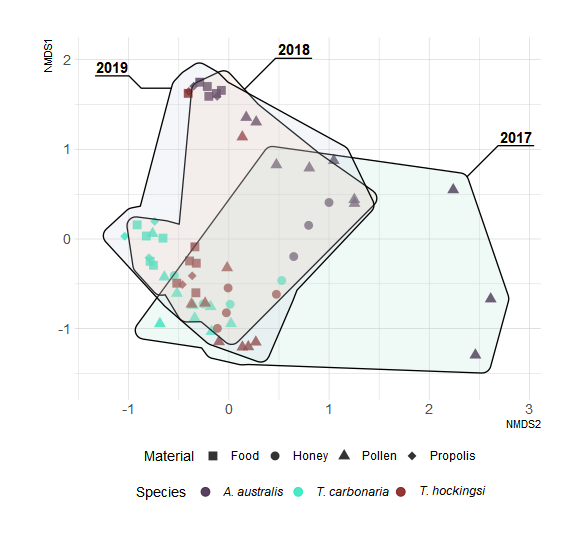

library(phyloseq)
library(qiime2R)
library(tidyverse)
library(magrittr)
library(symbioteR)
library(vegan)
library(ggforce)
library(hrbrthemes)
library(concaveman)
library(ggh4x)
library(ggtext)
source("functions.R")Australian Stingless Bee Nest Microbiome
Supplementary material for the paper 16S Amplicon Metabarcoding from Nest Materials of Native Australian Stingless Bees
Boyd Tarlinton ![]()
Flavia Carmelina Massaro
Caroline Hauxwell
Introduction
This repository contains the code and documentation required to reproduce the results presented in our paper “16S Amplicon Metabarcoding from Nest Materials of Native Australian Stingless Bees”. We describe how the raw metabarcoding datasets were processed using QIIME 2 and further analysed in R to produce the figure included in our paper. Beta diversity statistics describing microbiome variability associated with the different bee species and material types sampled are calculated, visualised, and used for hypothesis testing.
Data Availability
All data are available from NCBI SRA with study accession SRP405832.
Samples were sequenced in two batches, identified by the last two characters of each sample name.
Processing in QIIME 2
Raw sequence data were processed on the QUT HPC Lyra. Batches B1 and B2 were analysed separately using the following scripts: B1, B2.
Setup
Load packages and pre-defined functions.
Load Data
We read the .QZA artifacts as phyloseq objects, merge them, and add metadata.
hiveMB_1 <- readQZAFolder("Data/H1")
hiveMB_2 <- readQZAFolder("Data/H2")
hiveMB <- merge_phyloseq(hiveMB_1, hiveMB_2)
sample_data(hiveMB) <- read_tsv("Data/Metadata_20221101.tsv") |>
mutate(Year = str_extract(Date_Harvest, "\\d{4}$"),
ID = str_replace_all(ID, "_", "-")) |>
column_to_rownames("ID")Filter Samples
We remove any ASVs that were not identified as
hiveMB <- removeNonbacterial(hiveMB)Beta Diversity
Perform Ordination
set.seed(42)
hiveMBRel <- hiveMB |>
makeObservationsRelative()
ord <- ordinate(hiveMBRel,
distance = "bray",
method = "NMDS",
k = 4,
maxit = 1000,
trace = 0)
ordCall: metaMDS(comm = veganifyOTU(physeq), distance = distance, k = 4, trace = 0, maxit = 1000)
global Multidimensional Scaling using monoMDS
Data: veganifyOTU(physeq) Distance: bray
Dimensions: 4 Stress: 0.08892112 Stress type 1, weak ties Two convergent solutions found after 20 tries Scaling: centring, PC rotation, halfchange scaling Species: expanded scores based on ‘veganifyOTU(physeq)’
Plot Ordination
custPal <- viridis::turbo(n = 4)[c(1:2, 4)]
ordPlot <- plot_ordination(hiveMBRel, ord,justDF = TRUE) |>
ggplot(data = _,
aes(x = NMDS2,
y = NMDS1,
shape = Material,
color = Bees)) +
geom_point(size = 3, alpha = 0.8) +
theme_ipsum(base_family = "sans") +
geom_mark_hull(aes(x = NMDS2,
y = NMDS1,
x0 = NMDS2,
y0 = NMDS1,
fill = Year,
label = Year),
inherit.aes = FALSE,
label.margin = margin(),
con.cap = 0,
label.fill = NA,
concavity = 3,
alpha = 0.2) +
scale_colour_manual(values = custPal, "Species",
labels = c(expression(paste(italic("A. australis"))),
expression(paste(italic("T. carbonaria"))),
expression(paste(italic("T. hockingsi"))))) +
scale_fill_brewer(palette = "Pastel2", guide = "none") +
scale_shape_manual(values = c(15, 16, 17, 18)) +
theme(legend.text.align = 0,
legend.position = "bottom",
legend.box = "vertical",
legend.margin = margin(),
text = element_text(family = "sans"),
aspect.ratio = 3.5/4.5) +
scale_x_continuous(expand = expansion(add = 0.5)) +
scale_y_continuous(expand = expansion(add = 0.5))
ggsave("Out/Figures/Figure1.svg", ordPlot, device = "svg", bg = "white",
width = 6.5, height = 6, dpi = 1200, )
Significance Test
dist <- phyloseq::distance(hiveMB, method = "bray")
adonis2(dist ~ Bees + Material + Year + Hive_ID,
as(sample_data(hiveMB), "data.frame"))| Df | SumOfSqs | R2 | F | Pr(>F) | |
|---|---|---|---|---|---|
| Bees | 2 | 4.358568 | 0.1770692 | 7.916509 | 0.001 |
| Material | 3 | 3.857593 | 0.1567168 | 4.671055 | 0.001 |
| Year | 2 | 1.071197 | 0.0435180 | 1.945625 | 0.004 |
| Hive_ID | 10 | 3.215226 | 0.1306203 | 1.167969 | 0.095 |
| Residual | 44 | 12.112472 | 0.4920758 | NA | NA |
| Total | 61 | 24.615056 | 1.0000000 | NA | NA |
Export Data
We provide a copy of the phyloseq object that can be easily imported for further analysis in R.
saveRDS(hiveMB, "Out/hiveMB.rds")Session Info
sessionInfo()R version 4.2.1 (2022-06-23 ucrt)
Platform: x86_64-w64-mingw32/x64 (64-bit)
Running under: Windows 10 x64 (build 19043)
Matrix products: default
locale:
[1] LC_COLLATE=English_Australia.utf8 LC_CTYPE=English_Australia.utf8
[3] LC_MONETARY=English_Australia.utf8 LC_NUMERIC=C
[5] LC_TIME=English_Australia.utf8
attached base packages:
[1] stats graphics grDevices datasets utils methods base
other attached packages:
[1] ggtext_0.1.2 ggh4x_0.2.2 concaveman_1.1.0
[4] hrbrthemes_0.8.0 ggforce_0.4.1.9000 vegan_2.6-2
[7] lattice_0.20-45 permute_0.9-7 symbioteR_0.0.0.9000
[10] magrittr_2.0.3 forcats_0.5.2 stringr_1.4.1
[13] dplyr_1.0.9 purrr_0.3.4 readr_2.1.2
[16] tidyr_1.2.0 tibble_3.1.7 ggplot2_3.3.6
[19] tidyverse_1.3.2 qiime2R_0.99.6 phyloseq_1.40.0
loaded via a namespace (and not attached):
[1] readxl_1.4.1 backports_1.4.1 Hmisc_4.7-1
[4] systemfonts_1.0.4 plyr_1.8.7 igraph_1.3.4
[7] splines_4.2.1 GenomeInfoDb_1.32.3 digest_0.6.29
[10] foreach_1.5.2 htmltools_0.5.3 viridis_0.6.2
[13] qpcR_1.4-1 fansi_1.0.3 checkmate_2.1.0
[16] googlesheets4_1.0.1 cluster_2.1.4 tzdb_0.3.0
[19] Biostrings_2.64.0 modelr_0.1.9 extrafont_0.18
[22] vroom_1.5.7 svglite_2.1.0 extrafontdb_1.0
[25] jpeg_0.1-9 colorspace_2.0-3 rvest_1.0.3
[28] haven_2.5.1 xfun_0.31 crayon_1.5.1
[31] RCurl_1.98-1.8 jsonlite_1.8.0 survival_3.4-0
[34] iterators_1.0.14 ape_5.6-2 glue_1.6.2
[37] polyclip_1.10-0 gtable_0.3.1 gargle_1.2.0
[40] zlibbioc_1.42.0 XVector_0.36.0 V8_4.2.1
[43] Rhdf5lib_1.18.2 Rttf2pt1_1.3.10 BiocGenerics_0.42.0
[46] DEoptimR_1.0-11 scales_1.2.1 DBI_1.1.3
[49] Rcpp_1.0.9 viridisLite_0.4.1 gridtext_0.1.5
[52] htmlTable_2.4.1 bit_4.0.4 foreign_0.8-82
[55] Formula_1.2-4 stats4_4.2.1 DT_0.24
[58] truncnorm_1.0-8 htmlwidgets_1.5.4 httr_1.4.4
[61] RColorBrewer_1.1-3 ellipsis_0.3.2 pkgconfig_2.0.3
[64] NADA_1.6-1.1 farver_2.1.1 nnet_7.3-17
[67] dbplyr_2.2.1 deldir_1.0-6 utf8_1.2.2
[70] labeling_0.4.2 tidyselect_1.1.2 rlang_1.0.4
[73] reshape2_1.4.4 munsell_0.5.0 cellranger_1.1.0
[76] tools_4.2.1 cli_3.3.0 generics_0.1.3
[79] ade4_1.7-19 broom_1.0.1 evaluate_0.16
[82] biomformat_1.24.0 fastmap_1.1.0 yaml_2.3.5
[85] bit64_4.0.5 knitr_1.40 fs_1.5.2
[88] robustbase_0.95-0 rgl_0.109.6 nlme_3.1-157
[91] xml2_1.3.3 compiler_4.2.1 rstudioapi_0.14
[94] curl_4.3.2 png_0.1-7 zCompositions_1.4.0-1
[97] reprex_2.0.2 tweenr_2.0.1 stringi_1.7.8
[100] highr_0.9 gdtools_0.2.4 Matrix_1.4-1
[103] multtest_2.52.0 vctrs_0.4.1 pillar_1.8.1
[106] lifecycle_1.0.1 rhdf5filters_1.8.0 data.table_1.14.2
[109] bitops_1.0-7 R6_2.5.1 latticeExtra_0.6-30
[112] renv_0.16.0 gridExtra_2.3 IRanges_2.30.0
[115] codetools_0.2-18 MASS_7.3-58.1 assertthat_0.2.1
[118] rhdf5_2.40.0 minpack.lm_1.2-2 withr_2.5.0
[121] S4Vectors_0.34.0 GenomeInfoDbData_1.2.8 mgcv_1.8-40
[124] parallel_4.2.1 hms_1.1.2 grid_4.2.1
[127] rpart_4.1.16 rmarkdown_2.16 googledrive_2.0.0
[130] Biobase_2.56.0 lubridate_1.8.0 base64enc_0.1-3
[133] interp_1.1-3